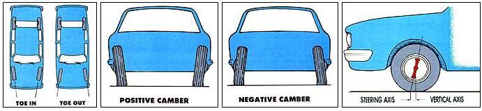
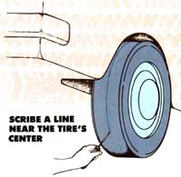
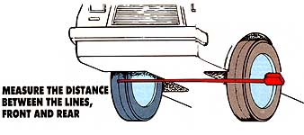
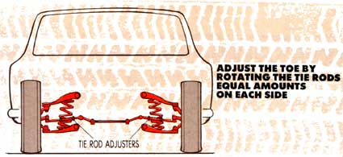

Illustrstions By Don Osby
THERE ARE THREE FACTORS contributing to proper front-end wheel alignment, and all of them must be in order if your car is to handle safely and if the tires, suspension and steering components are to live to their full maturity.
Toe is the automotive equivalent of a pigeon-toed stance; the front tires on nearly all rear-wheel-drive cars are set to point in slightly to help you go straight down the highway. Camber is vertical toe-in; the tires on many cars tilt slightly inward from top to bottom (negative) or outward (positive) to facilitate handling in turns. Caster is the angle from vertical that the wheel pivots on when turned. If you imagine this line extending to the ground, the point of contact will be in front of where the tire touches the ground. Positive caster gives the wheels an inherent tendency to center.
The bad news: You can't accurately adjust camber and caster at home with simple tools. The good news: Caster and camber don't usually need to be adjusted unless the car's been in an accident, and they're only adjustable by extreme means (such as bending a part) on many cars. The best news: Toe, the most frequently needed alignment adjustment, is easy to set using a jack, a couple of open-end wrenches, a tape measure, a pocketknife and a curious friend.
Get the Numbers
You can find your car's toe setting in a manual at the library (look for Motors Manuals) or from one of the popular series of repair guides available from bookstores. (Official factory workshop manuals also supply the information, but they often go into more detail than we need, and they usually cost more.) The toe will be expressed as a range, usually in inches or millimeters. (For example, all 1982 to 1985 Chevrolet Celebrities should have between 'he" toe-in and 1/16" toe-out.) A few factory manuals will express toe as an angle (1985 VW Vanagon toe is 20 minutes in, + /- 30 minutes). Unless your car has unusually large or small tires, you can figure around 1/32" for each 10 minutes. Furthermore, at the risk of overgeneralizing, most cars will work fine with about 'he" toe-in.
Check the Front End
There's no sense trying to adjust toe on a car with worn or loose front-end components. Before you start measuring, park your car on a flat section of asphalt with at least 10' of clearance in front, jack up the front end, and place it on jack stands. Make sure that the wheel bearings are properly adjusted, that the ball joints are in good shape and that the steering gear box (if so equipped) is properly adjusted. In general, if you can grip each wheel firmly and shake it without feeling much looseness-either horizontally or vertically--things are in pretty good order.
Set It
If your front end checks out in good condition, you're ready to align. With the car still on the jack stands, follow these steps: 1. Spin each tire, and scribe a thin line near the center of the tread with a pocketknife or scribe. If there is no point on the circumference without a tread block, you'll have to support the marking device to prevent it from jumping.
2. Lower the car to the ground, and push down on each fender a few times to move the suspension and allow the car to settle on its springs.
3. Unlock the steering wheel, and push the car forward at least 10', allowing the steering wheel to move freely.
4. With the aid of your cohort, measure the distance between the lines on the fronts of the tires at points level with the spindles. Then measure the distance between the lines on the backs of tires at the same height. The difference between the two measurements is the toe-in or -out; smaller numbers in front mean toe-in.
5. Adjust the toe by loosening the lock nuts on the tie-rod ends next to both spindles and taking up the desired adjustment equally on each side to keep the steering wheel centered. Then, after you lock everything down, repeat the measuring procedure to be sure you got it right.
That's it!
|
|
 |
 |
|
 |
 |
|